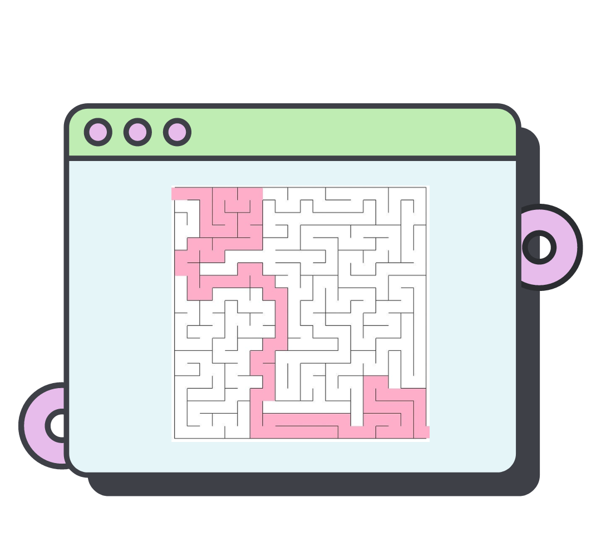

-
Compiler
January 2024 - present• Developed a comprehensive coding project featuring a lexical analyzer, parser, and interpreter
• Successfully passed comprehensive test cases,testing accuracy of the lexical analyzer, parser, and interpreter components
• Implemented a lexical analyzer to tokenize input code, a parser to generate abstract syntax trees (ASTs), and an interpreter to execute,showcasing strong skills in language design
-
Task Manager
February 2024• Developed a task management application, featuring functionalities for adding, removing, and displaying tasks in a user-friendly list format
• Utilized Python with the Tkinter library to craft an graphical user interface, ensuring a seamless and efficient user experience
• Error handling mechanisms to gracefully manage and resolve potential runtime errors, enhancing the overall stability and user experience of the application
-

Maze Search
November 2023• Developed an interactive educational tool utilizing Java and Graphical User Interface to facilitate students' understanding of backtracking algorithms
• Empowered users to customize maze parameters and input final destination coordinates
• Implemented backtracking algorithms and color-coded visual cues, reinforcing problem-solving skills and providing maze search with a reset function for continuous learning
-
Calculator
March 2021• Created a functional calculator application utilizing JavaScript and providing essential arithmetic operations with intuitive user interface design and error-free functionality
• Enabled users to perform simple arithmetic calculations, including addition, subtraction, multiplication, and division
• Implemented error handling functions to address edge cases such as division by zero, ensuring accurate and reliable calculations